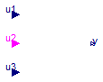
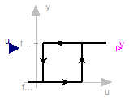
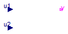
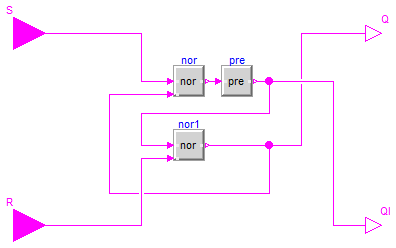

Modelica.Blocks.Logical.Switch
Modelica.Blocks.Logical.Switch
Modelica.Blocks.Logical.Switch
Modelica.Blocks.Logical.Switch
Switch between two Real signals

The Logical.Switch switches, depending on the logical connector u2 (the middle connector) between the two possible input signals u1 (upper connector) and u3 (lower connector).
If u2 is true, the output signal y is set equal to u1, else it is set equal to u3.
Extends from Modelica.Blocks.Icons.PartialBooleanBlock (Basic graphical layout of logical block).
| Type | Name | Description |
|---|---|---|
| input RealInput | u1 | Connector of first Real input signal |
| input BooleanInput | u2 | Connector of Boolean input signal |
| input RealInput | u3 | Connector of second Real input signal |
| output RealOutput | y | Connector of Real output signal |
 Modelica.Blocks.Logical.Hysteresis
Modelica.Blocks.Logical.Hysteresis
Transform Real to Boolean signal with Hysteresis

This block transforms a Real input signal into a Boolean output signal:
The start value of the output is defined via parameter pre_y_start (= value of pre(y) at initial time). The default value of this parameter is false.
Extends from Modelica.Blocks.Icons.PartialBooleanBlock (Basic graphical layout of logical block).
| Type | Name | Default | Description |
|---|---|---|---|
| Real | uLow | if y=true and u<=uLow, switch to y=false | |
| Real | uHigh | if y=false and u>=uHigh, switch to y=true | |
| Boolean | pre_y_start | false | Value of pre(y) at initial time |
| Type | Name | Description |
|---|---|---|
| input RealInput | u | |
| output BooleanOutput | y |
 Modelica.Blocks.Logical.Not
Modelica.Blocks.Logical.Not
Logical 'not': y = not u
The output is true if the input is false, otherwise the output is false.
Extends from Blocks.Interfaces.partialBooleanSISO (Partial block with 1 input and 1 output Boolean signal).
| Type | Name | Description |
|---|---|---|
| input BooleanInput | u | Connector of Boolean input signal |
| output BooleanOutput | y | Connector of Boolean output signal |
 Modelica.Blocks.Logical.Less
Modelica.Blocks.Logical.Less
Output y is true, if input u1 is less than input u2

The output is true if Real input u1 is less than Real input u2, otherwise the output is false.
Extends from Blocks.Interfaces.partialBooleanComparison (Partial block with 2 Real input and 1 Boolean output signal (the result of a comparison of the two Real inputs)).
| Type | Name | Description |
|---|---|---|
| input RealInput | u1 | Connector of first Boolean input signal |
| input RealInput | u2 | Connector of second Boolean input signal |
| output BooleanOutput | y | Connector of Boolean output signal |
 Modelica.Blocks.Logical.GreaterEqual
Modelica.Blocks.Logical.GreaterEqual
Output y is true, if input u1 is greater or equal than input u2
The output is true if Real input u1 is greater than or equal to Real input u2, otherwise the output is false.
Extends from Blocks.Interfaces.partialBooleanComparison (Partial block with 2 Real input and 1 Boolean output signal (the result of a comparison of the two Real inputs)).
| Type | Name | Description |
|---|---|---|
| input RealInput | u1 | Connector of first Boolean input signal |
| input RealInput | u2 | Connector of second Boolean input signal |
| output BooleanOutput | y | Connector of Boolean output signal |
 Modelica.Blocks.Logical.RSFlipFlop
Modelica.Blocks.Logical.RSFlipFlop
A basic RS Flip Flop

The output Q is set by the input S and reset by the input R, and keeps its value in between. QI is the inverse of Q.
Extends from Modelica.Blocks.Icons.PartialBooleanBlock (Basic graphical layout of logical block).
| Type | Name | Default | Description |
|---|---|---|---|
| Boolean | Qini | false | Start value of Q at initial time |
| Type | Name | Description |
|---|---|---|
| output BooleanOutput | Q | |
| output BooleanOutput | QI | |
| input BooleanInput | S | |
| input BooleanInput | R |
 Modelica.Blocks.Logical.Or
Modelica.Blocks.Logical.Or
Logical 'or': y = u1 or u2

The output is true if at least one input is true, otherwise the output is false.
Extends from Blocks.Interfaces.partialBooleanSI2SO (Partial block with 2 input and 1 output Boolean signal).
| Type | Name | Description |
|---|---|---|
| input BooleanInput | u1 | Connector of first Boolean input signal |
| input BooleanInput | u2 | Connector of second Boolean input signal |
| output BooleanOutput | y | Connector of Boolean output signal |
Modelica.Blocks.Logical.Nor
Logical 'nor': y = not (u1 or u2)
The output is true if none of the inputs is true, otherwise the output is false.
Extends from Blocks.Interfaces.partialBooleanSI2SO (Partial block with 2 input and 1 output Boolean signal).
| Type | Name | Description |
|---|---|---|
| input BooleanInput | u1 | Connector of first Boolean input signal |
| input BooleanInput | u2 | Connector of second Boolean input signal |
| output BooleanOutput | y | Connector of Boolean output signal |
 Modelica.Blocks.Logical.Pre
Modelica.Blocks.Logical.Pre
Breaks algebraic loops by an infinitesimal small time delay (y = pre(u): event iteration continues until u = pre(u))

This block delays the Boolean input by an infinitesimal small time delay and therefore breaks algebraic loops. In a network of logical blocks, in every "closed connection loop" at least one logical block must have a delay, since algebraic systems of Boolean equations are not solvable.
The "Pre" block returns the value of the "input" signal from the last "event iteration". The "event iteration" stops, once both values are identical (u = pre(u)).
Extends from Blocks.Interfaces.partialBooleanSISO (Partial block with 1 input and 1 output Boolean signal).
| Type | Name | Default | Description |
|---|---|---|---|
| Boolean | pre_u_start | false | Start value of pre(u) at initial time |
| Type | Name | Description |
|---|---|---|
| input BooleanInput | u | Connector of Boolean input signal |
| output BooleanOutput | y | Connector of Boolean output signal |